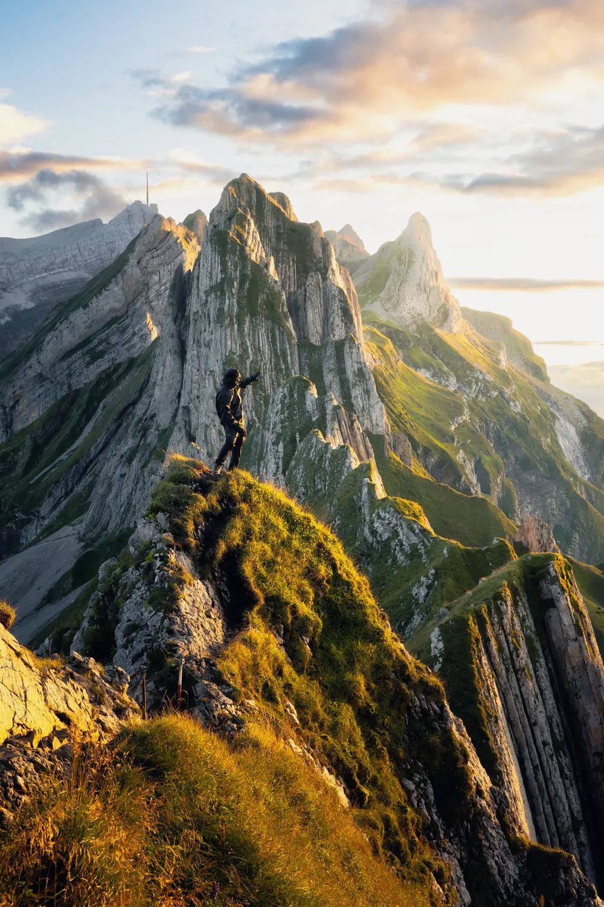
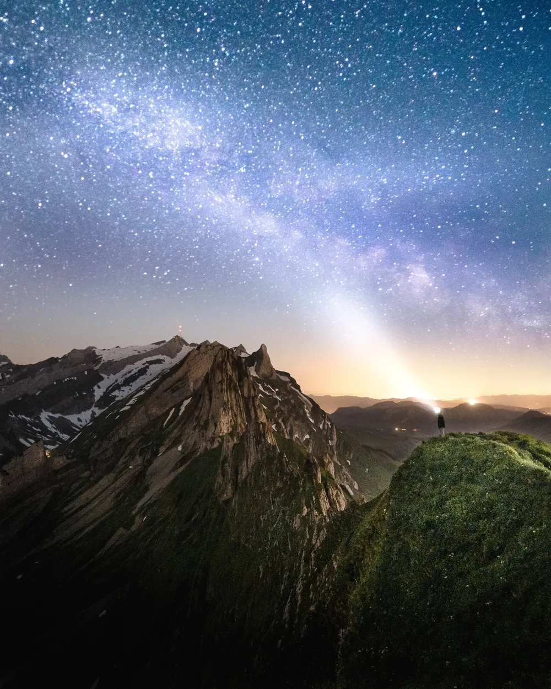
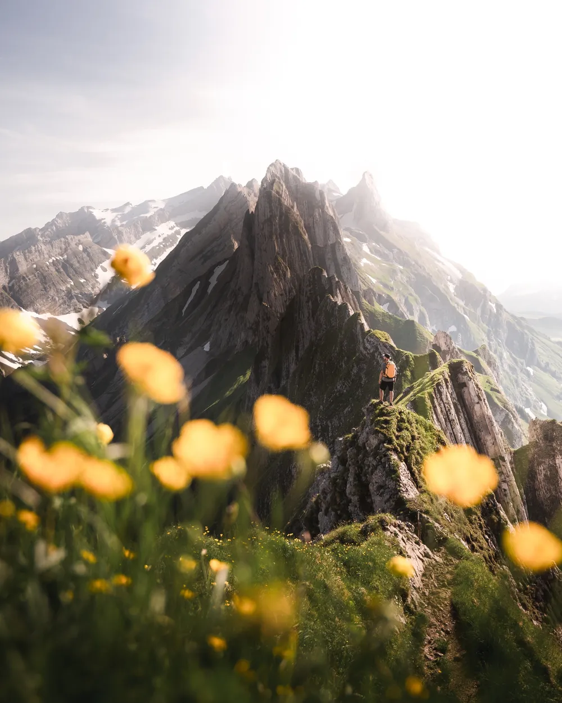
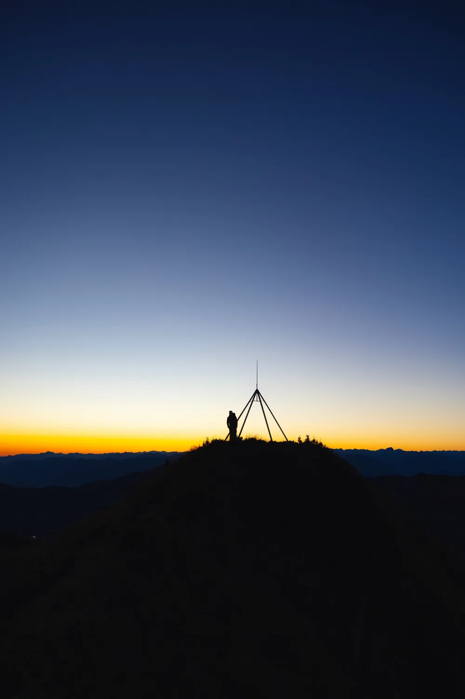
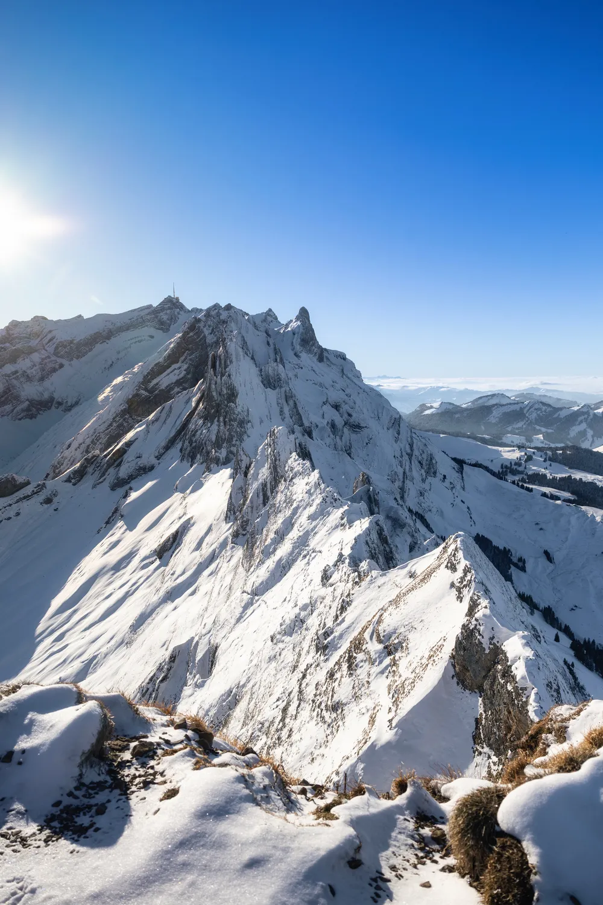

1 / 6 Photo · @leon.helgEASY CABLE CAR, BIG RIDGE
Schäfler
A 2-hour walk from Ebenalp to the Schäfler ridge in Appenzell. One of the best classic hikes in Eastern Switzerland.
RegionAlpstein, Appenzell
AccessCable car + 2 hr hike
EffortModerate
Best lightSunset or sunrise